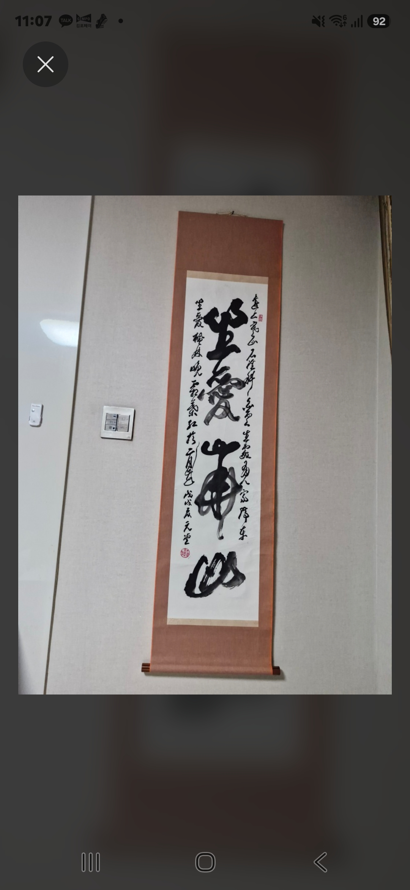

작품 상세 정보
분류: 족자 작품 (작품 02)
중심 대자: 坐而觀山 (좌애관산)
형식: 전통 세로 족자 (양쪽 협시 포함)
작가: 원당 김제운
해설 및 의미
"편안히 앉아서 산을 바라본다"는 뜻을 담고 있습니다. 세상의 분주함과 속세의 일에 휩쓸리지 않고, 한 발 물러서서 마음의 여유를 가지고 세상을 조용히 관조하는 선비의 초탈한 정신과 깊은 수양의 경지를 표현한 작품입니다.
원당 김제운 작가 특유의 묵직하면서도 거침없이 이어지는 유려한 필치가 작품 전체에 깊은 울림을 더해 주며, 오랜 세월 속에서도 흐트러지지 않는 곧은 서예 정신을 고스란히 전해 줍니다.